How AutoAcceptSsoPermission closes the gap between Windows user choice and managed device onboarding
The Continue to sign in prompt always looked like a small Windows dialog, but on managed devices, it interrupted something much bigger: the seamless single sign-on experience that applications such as Microsoft Edge and the Company Portal were expected to use. In Parts 1 and 2, we followed that prompt from the visible user experience into the regional Windows policy and the feature controls behind it. Microsoft has now introduced the supported enterprise setting that was missing from the beginning.
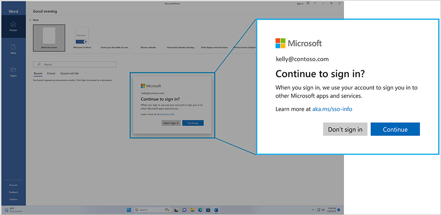
The story started with a prompt that broke silent sign-in
The original problem occurred when a user opened an application and expected Windows to automatically use the connected work or school account. Instead, the application stopped, and Windows asked whether that account could also be used in other Microsoft apps and services.
On a personal device, this can be a one-time decision. On shared devices, temporary profiles, and freshly provisioned Autopilot devices, the Continue to sign in prompt is included in the onboarding flow. The Company Portal may open exactly as intended, but its silent sign-in cannot continue until the user accepts the permission.
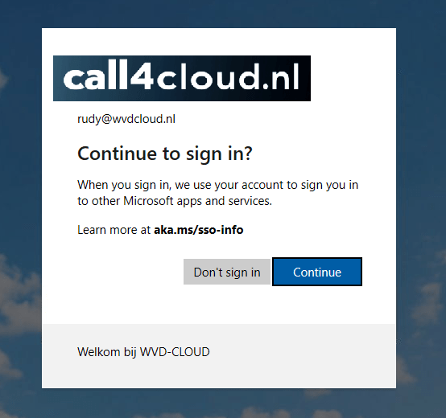
The Company Portal made the effect especially visible. It could launch automatically after enrollment, start loading, and then immediately present the same permission request. The application itself was not blocked from opening. The automatic sign-in path was interrupted, which meant the experience was no longer automatic from the user’s perspective.
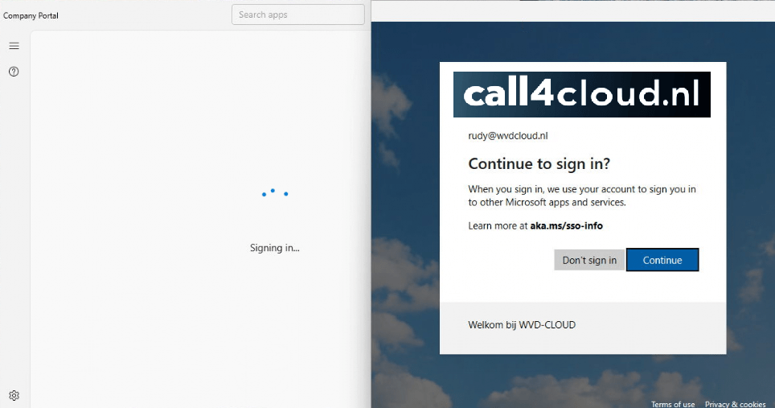
Following the decision on Windows
Part 1 showed that this behavior was not controlled by the application or by an Intune setting. When the Company Portal requested a token, the AAD Token Broker returned error 0xCAA2000C with AADSTS9002341, stating that the user was required to permit SSO. Just before the prompt appeared, RuntimeBroker read the device region and opened the protected IntegratedServicesRegionPolicySet.json file in System32.
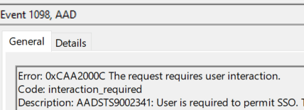
Inside that JSON file, Windows keeps regional rules for integrated experiences. One of those rules is Automatic app sign in. When the current region is included in the disabled list, Windows does not allow the application to continue silently until the user has made the SSO decision.
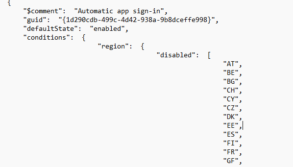
That discovery explained why two identically managed devices could behave differently. The Intune policies, application assignments, and Microsoft Entra configuration could all be the same, while the device region still changed the sign-in experience.
Part 2 found the mechanism, but not a supported control
The first workaround changed the regional JSON file so that Windows no longer treated the device region as blocked. It worked, but modifying a protected operating system file also introduced a servicing risk. Part 2, therefore, followed the authentication path deeper into aadtb.dll and found the Windows feature checks that enabled the regional SSO enforcement.
The important features included DMASSOCompliance, IntegratedServicesPolicyEnforcement, and AccountAndRegionalPolicyEnforcement. Disabling the relevant features with ViVeTool restored silent sign-in without changing the JSON file, but it still depended on internal Windows feature controls that Microsoft could change between builds.
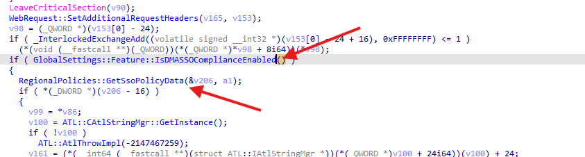
At that point the technical path was clear, but the enterprise management story was not. Administrators could either change a protected file or override internal features. Neither option represented the policy that managed Windows devices actually needed.
Microsoft finally adds AutoAcceptSsoPermission
On July 15, 2026, Microsoft announced a supported registry policy that allows administrators to accept SSO permissions automatically on eligible managed Windows devices. The capability is available after the July 2026 monthly security update for Windows 11 version 24H2 and 25H2.
Supported policy Registry path: HKLM\SOFTWARE\Policies\Microsoft\Windows\AAD |
This setting does not remove the regional policy, change the device location, or disable the Windows features discovered in Part 2. Windows can keep the user choice model, while the organization can make that choice for the Microsoft Entra accounts used on devices it manages.
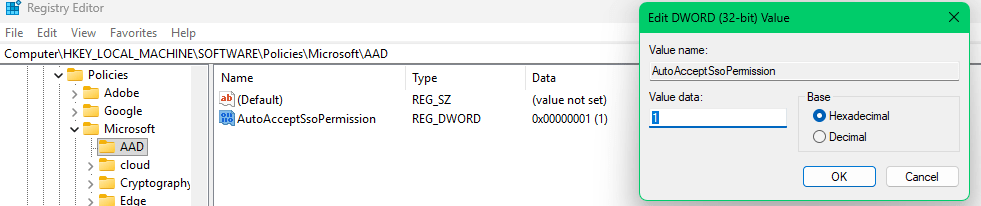
Microsoft limits the policy to managed enterprise devices with Microsoft Entra ID accounts. Personal Microsoft accounts retain the prompt, and unmanaged devices are unaffected. This is therefore not a global switch that removes the Windows permission experience. It is an enterprise control for a managed trust relationship.
What the binaries show
Static analysis of the collected Windows binaries indicates that AutoAcceptSsoPermission is located within the existing regional SSO path we investigated in the previous blogs. In aadtb.dll, the policy name appears beside BrowserSSO::GetCookieInfoForUri, RegionalPolicies::GetSsoPolicyData, Windows.Internal.System.Profile.RegionPolicyEvaluator and the Software\Policies\Microsoft\Windows\AAD registry path. AAD.Core.dll contains the same policy name and registry path. This shows that the token broker reads the administrator setting while it builds the SSO policy data, rather than changing the regional JSON file itself.
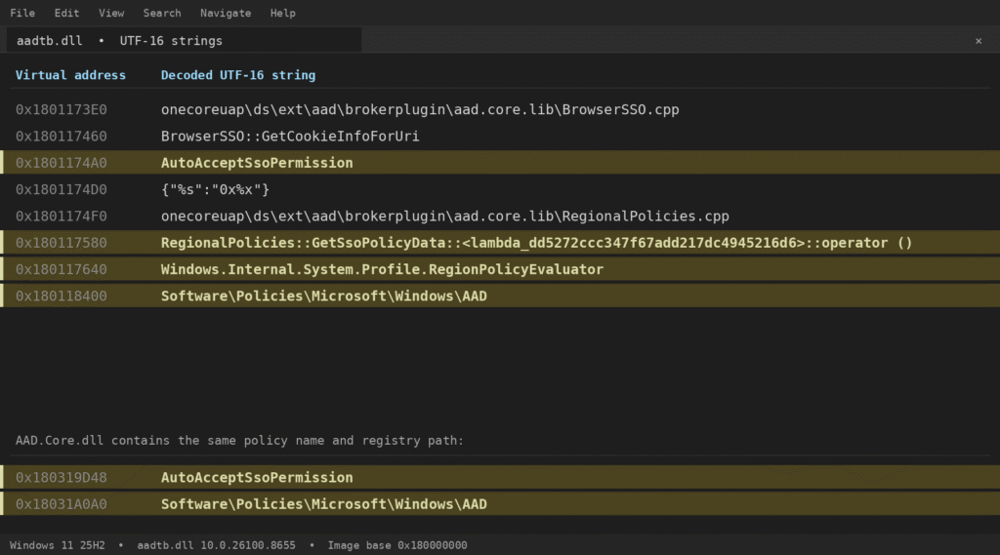
The request path provides the second half of the story. Inside OAuthTokenRequestBase::SendRequest, aadtb.dll adds x-ms-SsoFlags and x-ms-SsoFlagsSubstatus to the authentication request. The same binary also contains a dedicated SsoRestrAutoAccept state. Together with Microsoft’s documented behavior, this supports the conclusion that a value of 1 changes the broker state before user interaction is required. The policy does not hide the Continue to sign in message after it appears. It prevents the request from reaching the unresolved SSO permission state that would require the message.
| Application requests the connected Windows account ↓ Microsoft.AAD.BrokerPlugin builds the regional SSO policy data ↓ AutoAcceptSsoPermission is read from the Windows AAD policy path ↓ On an eligible managed Entra device, DWORD 1 supplies the administrator accepted state ↓ aadtb.dll adds x-ms-SsoFlags and x-ms-SsoFlagsSubstatus to the request ↓ The silent request continues without asking the user to permit SSO |
The request function adds both SSO values, while the same binary defines the SsoRestrAutoAccept state.
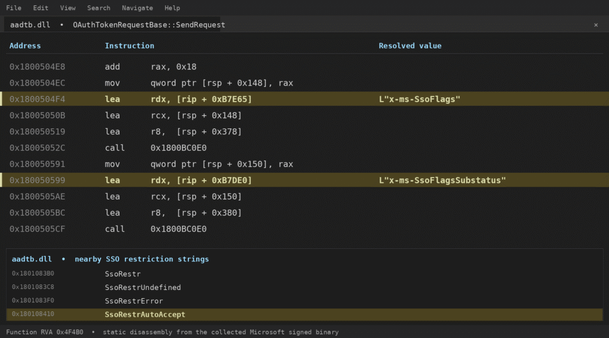
Deploying AutoAcceptSsoPermission with Intune
Microsoft states that the registry policy can be deployed through Group Policy, Microsoft Intune, Configuration Manager, or another management tool that can write policy values. Until the setting is exposed through a native Intune policy interface, a device context PowerShell script provides a straightforward deployment method.
PowerShell |
The script must run in the system context because the value is stored under HKEY_LOCAL_MACHINE. The device also needs the July 2026 security update or a later supported build. Creating the registry value on an older build does not add the operating system support behind the policy.
Testing should be performed on a device where the old JSON change and ViVeTool overrides have been removed. Otherwise, the silent sign-in may already be restored by the earlier workaround, and the new policy cannot be validated cleanly.
Why does this policy appear now?
The AutoAcceptSsoPermission policy timing becomes more interesting when we return to Microsoft Ignite 2024. Microsoft showed an onboarding experience in which the Company Portal would launch automatically after Autopilot. Instead of leaving the user in the Account setup phase, the device could switch to the desktop and use the Company Portal to display the remaining applications and compliance status.
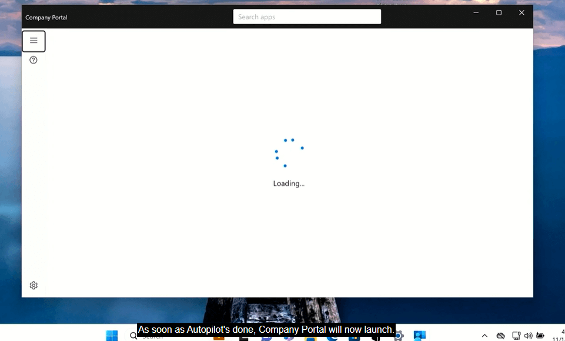
That built-in automatic launch experience was announced, but it was not available during the period covered by the original Company Portal article. A custom launch method could reproduce the idea, yet it would also immediately expose the regional SSO problem. Automatically starting the Company Portal feels seamless only when it can also use the Windows account without prompting for another decision.
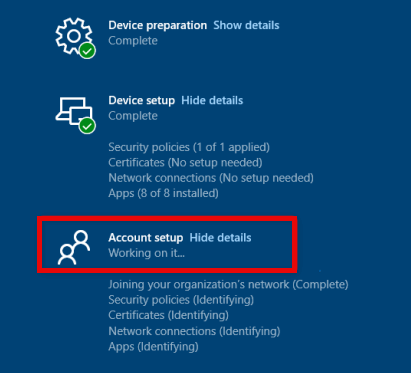
Without the new policyAutopilot completes → the user reaches the desktop → Company Portal launches → Windows requests SSO permission → the onboarding flow pauses at the Continue to sign in prompt. |
With AutoAcceptSsoPermission |
Microsoft has not said that the delayed Company Portal feature caused the new SSO policy to be created, so that connection should not be presented as confirmed. The technical dependency is clear, however. Any application that starts automatically and expects silent access to the connected Windows account can be interrupted by the permission requirement. The new policy removes that interruption for eligible managed devices.
In that sense, AutoAcceptSsoPermission is more than a fix for an annoying prompt. It is one of the controls Windows needs before an administrator can build a genuinely automatic onboarding experience around applications that depend on the signed-in work account.
Where this leaves Parts 1 and 2
The first two articles remain the technical explanation of how Windows reached the decision to show the prompt. Part 1 documents the device region and the hidden policy file. Part 2 documents the internal feature enforcement and why the cleaner workaround still depended on unsupported controls.
For Windows 11 version 24H2 and 25H2 devices that have the July 2026 update or later, AutoAcceptSsoPermission should now replace both workarounds. There is no longer a need to modify IntegratedServicesRegionPolicySet.json or disable regional SSO features with ViVeTool on supported devices.
Conclusion
The Continue to sign in prompt began as a small break in the Windows user experience, but the investigation revealed a much larger gap between regional user preferences and enterprise device management. Windows knew how to ask the user for permission, yet administrators had no supported way to make that decision on devices they already managed.
AutoAcceptSsoPermission closes that gap. It keeps the default prompt for personal accounts and unmanaged devices while allowing eligible managed devices to continue using their connected Microsoft Entra account without interrupting the application flow.
The old research still explains what happens beneath the surface. The difference is that administrators no longer need to work under Windows to control it.
The final setting |
Sources
The “Continue to Sign in Prompt” That breaks the SSO
Continue to Sign in Prompt Part 2: Disable the DMA SSO Compliance
Now available: Admin control for SSO prompts in Windows
Improving Onboarding Experience: Automatically Launch the Company Portal